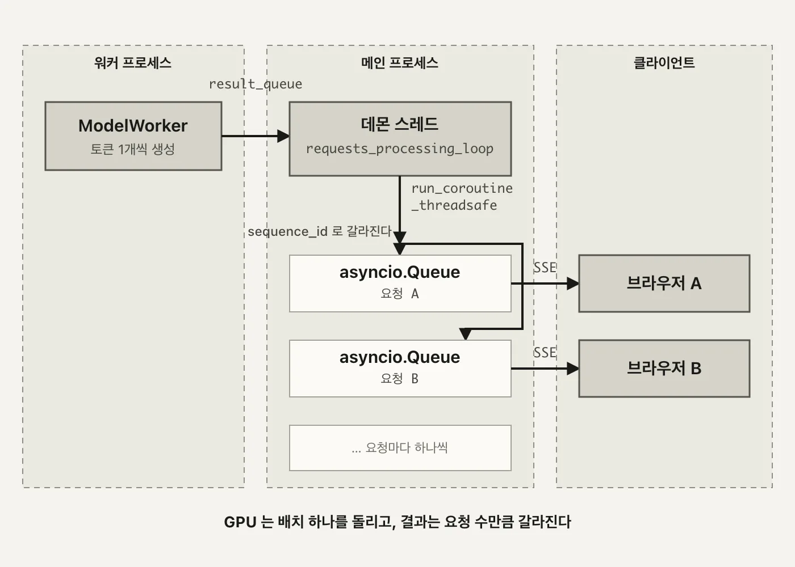
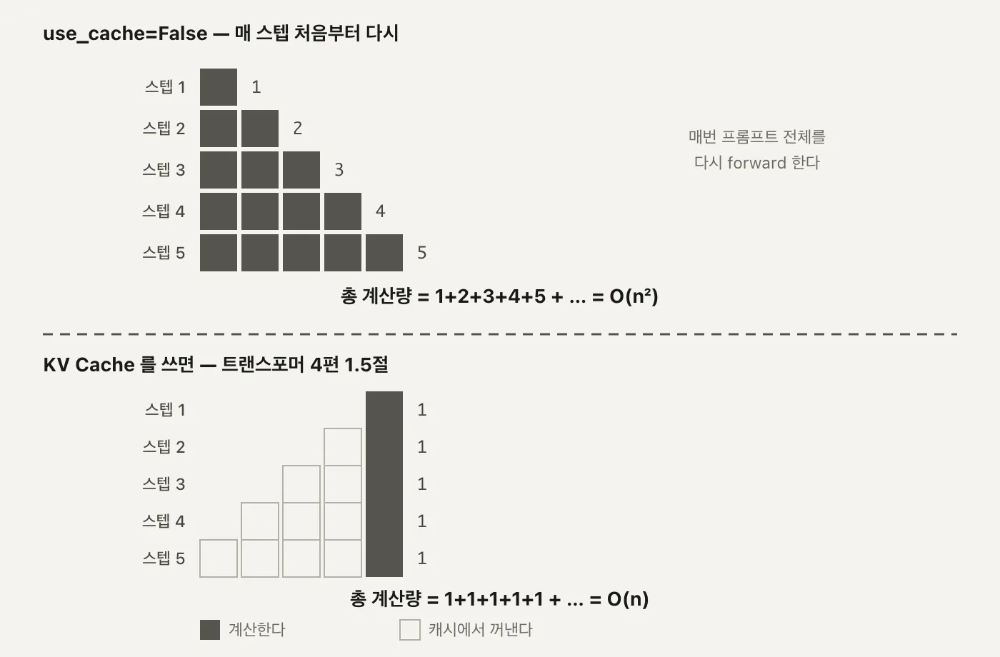
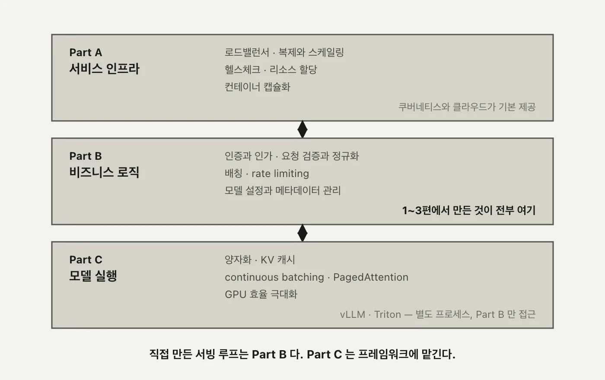

llm
서빙 3편. 스트리밍과 vLLM - 303줄을 20줄로
배치 하나에서 나온 토큰을 요청별로 갈라 보내는 SSE 구조와, 직접 만든 서빙 루프를 프레임워크로 갈아탈 때 드러나는 것
2026.08.16 · 33 min read
2편에서 만든 /generate는 배치가 끝나야 응답 하나를 돌려줍니다. max_tokens=20이면 20번의 생성 스텝이 전부 끝난 뒤에야 글자가 나옵니다. 이번 편은 그 대기를 SSE로 잘게 쪼개는 이야기로 시작해서, 쪼개다 보니 드러난 반면교사(캐시 없는 forward)를 지나, 결국 그 반면교사를 통째로 걷어내고 vLLM으로 갈아타는 데까지 갑니다.
1부. 스트리밍
1.1 전체 생성을 기다리는 비용
1편 1.2절에서 그린 여섯 컴포넌트, 2편 1.1-1.2절에서 만든 배치 재구성 — 이 둘이 맞물려 돌아가는 결과가 /generate입니다. 문제는 사용자가 보는 화면입니다. llm.py의 self.max_tokens = 20이 뜻하는 건, 요청 하나가 응답을 받기까지 생성 스텝 20번이 전부 끝나야 한다는 것입니다. 2편 1.1-1.2절에서 만든 배치가 다 돌 때까지 화면에는 아무 글자도 없습니다.
여기서 짚어야 할 게 하나 있습니다. 스트리밍은 이 20번의 계산량을 줄이지 않습니다. 모델이 하는 일은 그대로입니다. 바뀌는 건 그 20개 토큰을 한 번에 몰아서 줄지, 하나씩 흘려보낼지뿐입니다. 첫 글자가 화면에 뜨는 시점(time to first token)이 당겨질 뿐, 마지막 글자가 뜨는 시점은 그대로입니다.
비스트리밍 [ ─────────── 20스텝 계산 ─────────── ] → 응답 한 번에 도착
스트리밍 [1][2][3][4] ...................... [20]
↑ 여기서부터 화면에 표시 ↑ 마지막 토큰 도착 시점은 동일
두 줄의 오른쪽 끝은 같은 시점입니다. 다만 사람은 그 둘을 다르게 느낍니다. 20토큰이 한 번에 뚝 떨어지는 것과, 첫 토큰이 즉시 뜨고 나머지가 타이핑되듯 이어지는 것 — 같은 시간이어도 체감은 후자가 훨씬 짧습니다.
max_tokens=20은 이 데모에 맞춘 작은 값입니다. 실서비스에서 흔한 max_tokens=512나 1024였다면, 비스트리밍 쪽의 대기 시간은 그 배로 늘어나지만 스트리밍 쪽의 "첫 토큰까지" 시간은 거의 그대로입니다. 응답이 길어질수록 두 방식의 체감 격차도 같이 벌어집니다.
1.2 SSE - data 한 줄씩 밀어내기
이 체감 지연을 줄이는 전송 방식이 SSE입니다.
실제로 나가는 한 줄은 이렇습니다.
data: {"token":" a","sequence_id":"..."}\n\n
FastAPI 쪽 구현은 main.py:generate_stream:48-59입니다.
@app.post("/generate_stream")
async def generate_stream(request: GenerateRequest, llm: LLMEngine = Depends(get_llm)):
async def event_generator():
loop = asyncio.get_event_loop()
async for token in llm.event_generator(loop, request.prompt):
# token = 'data: {"token": " a", "sequence_id": "8310f5e1-6f6f-480e-b2f9-c8144a12cc17"}\n\n'
yield token
return StreamingResponse(
event_generator(),
media_type="text/event-stream"
)
StreamingResponse에 media_type="text/event-stream"을 지정하는 게 전부입니다. 나머지는 안에서 yield되는 문자열이 SSE 포맷을 지키기만 하면 됩니다. data: 로 시작하지 않으면 브라우저의 이벤트 파서가 그 줄을 무시하고, \n\n이 빠지면 다음 줄과 한 이벤트로 합쳐집니다. 방향은 서버에서 클라이언트로만 흐릅니다. 클라이언트가 서버에 뭔가 다시 보내야 하면 SSE가 아니라 별도의 요청이나 웹소켓이 필요합니다. 이 서비스는 토큰을 밀어내기만 하면 되니 SSE로 충분합니다.
tests/test_stream.sh가 실제로 이 엔드포인트를 이렇게 부릅니다.
curl -N -H "Accept: text/event-stream" \
-H "Content-Type: application/json" \
-d '{"prompt": "Hello, I am"}' \
http://localhost:8000/generate_stream
-N이 curl의 버퍼링을 끄는 옵션입니다. 이게 없으면 curl이 응답을 다 받을 때까지 화면에 아무것도 안 찍어서, 서버는 스트리밍을 하고 있는데 클라이언트 쪽에서 뭉쳐 보이는 착시가 생깁니다.
문제는 이 yield 뒤에 있는 물건이 배치 하나에서 나온 토큰이라는 것입니다.
1.3 요청마다 asyncio.Queue 하나
2편에서 만든 배치는 요청 여러 개를 한 덩어리로 묶어 도는 구조입니다. 스트리밍에서도 배치는 그대로 돕니다. 문제는 그 배치가 시간차로 들고 나는 상태로 돈다는 것입니다.
T0 배치 = [ A ]
T1 배치 = [ A, B ]
T2 배치 = [ A, B, C ]
T3 배치 = [ B, C, D ] ← A는 끝나서 빠지고, D가 새로 들어옴
A, B, C, D는 서로 다른 사용자의 요청이고, 각자 자기 브라우저에만 자기 토큰이 가야 합니다. 배치 스레드가 뱉는 결과는 sequence_id가 붙은 토큰 목록 하나뿐이라, 이걸 사용자별로 갈라 보낼 통로가 필요합니다.
이 회전이 가능한 이유가 workload_manager.py:42-48의 get_next_batch(is_streaming=True)에 있습니다. active_streaming_sequences가 batch_size(4) 밑으로 떨어질 때마다 대기 큐에서 새 요청을 채워 넣는 while 루프입니다. A가 빠지면 그 자리가 비고, 다음 호출에서 바로 D가 그 자리를 메웁니다. 2편 4부에서 도식으로 본 그 연속 배칭이, 스트리밍 경로에서는 이 while 루프로 실제로 돌고 있습니다.
WorkloadManager는 이 풀을 /generate용과 완전히 분리해 둡니다. incoming_queue·active_sequences가 비스트리밍 몫이고, incoming_streaming_queue·active_streaming_sequences가 스트리밍 몫입니다. 같은 self.batch_size=4 값을 참조하지만 두 풀은 서로 다른 리스트라, 스트리밍 요청이 몰려도 비스트리밍 배치의 자리를 빼앗지 않고 그 반대도 마찬가지입니다. 그 통로가 요청마다 하나씩 만드는 asyncio.Queue입니다. llm.py:event_generator:123-149에서 만듭니다.
async def event_generator(self, loop, prompt: str):
asyncio.set_event_loop(loop)
queue = asyncio.Queue()
# Add streaming request to workload manager with the queue
seq_id = self.workload_manager.add_streaming_request(prompt, queue, loop)
try:
while True:
data = await queue.get()
if data is None: # End of stream
break
yield f"data: {data}\n\n"
...
add_streaming_request가 Sequence 객체에 이 큐와 이벤트 루프(loop)를 같이 박아둡니다. 배치 스레드가 이 시퀀스의 토큰을 만들 때마다, 그 시퀀스에 붙은 큐를 찾아 넣어주기만 하면 됩니다. await queue.get()이 다음 토큰이 올 때까지 기다리는 지점이고, None이 들어오면 스트림이 끝난 걸로 보고 루프를 빠져나갑니다.
큐를 요청마다 하나씩 두지 않고 배치 전체가 공유하는 큐 하나만 뒀다면 어떻게 될지 생각해보면 이 설계가 왜 필요한지 드러납니다. 배치 결과는 [{sequence_id: A, token: ...}, {sequence_id: B, token: ...}]처럼 여러 요청의 토큰이 한 목록에 섞여 나옵니다. 큐가 하나뿐이면 A의 event_generator가 queue.get()을 불렀을 때 B의 토큰을 받아버릴 수도 있습니다. sequence_id로 라우팅해서 각자의 큐에 나눠 넣어야, 각 event_generator가 자기 몫만 받습니다.
1.4 배치 스레드에서 이벤트 루프로
큐까지는 만들었는데, 그 큐에 값을 넣는 쪽이 문제입니다. 배치를 돌리는 코드는 1편 3.2절에서 본 그 이벤트 루프 위에 있지 않습니다. llm.py:requests_processing_loop:32-68는 데몬 스레드 하나에서 무한 루프로 돕니다.
def requests_processing_loop(self):
"""Process requests in a loop."""
while True:
try:
active_sequences = self.workload_manager.get_next_batch(is_streaming=True)
if not active_sequences:
time.sleep(0.1)
continue
prompts = [{'prompt': seq.prompt, 'request_id': seq.id} for seq in active_sequences]
prompts_results = self.model_executor.execute_forward_batch(prompts)
...
이 스레드는 await도 이벤트 루프도 모릅니다. 그런데 값을 넣어야 할 asyncio.Queue는 FastAPI의 이벤트 루프 스레드에 묶여 있습니다. 스레드 경계를 넘어야 합니다. 여기서 쓰는 게 asyncio.run_coroutine_threadsafe입니다. llm.py:46-63입니다.
for result in prompts_results:
seq = self.workload_manager.get_sequence(result['request_id'])
if result['is_finished'] or seq.token_count > self.max_tokens:
asyncio.run_coroutine_threadsafe(
seq.client_stream.put(None),
seq.loop
)
seq.finished = True
self.workload_manager.remove_finished_sequence(result['request_id'])
else:
asyncio.run_coroutine_threadsafe(
seq.client_stream.put(
json.dumps({"token": result['token'], "sequence_id": result['request_id']})
),
seq.loop
)
self.workload_manager.update_sequence_output(result['request_id'], result['token'])
seq.client_stream이 1.3절에서 만든 그 asyncio.Queue고, seq.loop가 그 큐가 속한 이벤트 루프입니다. run_coroutine_threadsafe(coroutine, loop)는 "이 코루틴을 저 루프에서 실행해줘"를 스레드 안전하게 부탁하는 함수입니다.
데몬 스레드는 그냥 queue.put_nowait(...)을 직접 부를 수 없습니다. asyncio.Queue는 애초에 스레드 안전하게 설계된 자료구조가 아니라, 하나의 이벤트 루프 안에서만 안전하다는 전제로 만들어졌습니다. 데몬 스레드가 그 큐를 직접 건드리면, 이벤트 루프가 마침 그 큐의 내부 상태를 읽고 있는 순간과 겹칠 수 있습니다. run_coroutine_threadsafe는 "직접 건드리지 말고, 그 큐가 안전한 루프에게 대신 해달라고 예약만 걸어라"는 우회로입니다.
내부적으로는 call_soon_threadsafe를 씁니다. 데몬 스레드가 run_coroutine_threadsafe(coroutine, loop)를 부르면, 그 코루틴을 즉시 실행하는 게 아니라 대상 루프의 실행 큐에 "다음 턴에 이걸 돌려라"는 콜백 하나를 안전하게 끼워 넣습니다. 실제 queue.put(...)은 그 콜백이 이벤트 루프 자신의 스레드 위에서 실행될 때 일어납니다. 1편 3.2절에서 본 그 이벤트 루프가 여기서는 데몬 스레드의 부탁을 받아 자기 턴에 대신 처리해주는 역할을 맡는 셈입니다.

result_queue로 나온 토큰은 아직 배치 전체가 섞여 있는 하나의 흐름이고, run_coroutine_threadsafe를 건너 요청별 asyncio.Queue에 담기는 순간 비로소 사용자 단위로 갈라집니다. 데몬 스레드(왼쪽 절반)와 이벤트 루프(오른쪽 절반)가 서로 다른 실행 문맥이라는 게 이 그림의 핵심입니다. (자작 도식)1.5 22스텝 내내 배치 크기 2
2편 2.2절에서 배치 shape 로그로 batch_size=4가 실제 실행에 찍히는 걸 확인했습니다. 스트리밍에서도 같은 로그가 찍힙니다. 요청 두 개를 동시에 스트리밍으로 열어보면 이렇습니다.
스텝 1 torch.Size([2, 4])
스텝 2 torch.Size([2, 5])
...
스텝 22 torch.Size([2, 25])
22스텝 내내 앞자리가 2로 고정됩니다. torch.Size([1, ...])는 한 번도 나오지 않습니다. 두 요청이 T0에 같이 배치에 들어가서, 한쪽이 먼저 끝나지 않는 한 끝까지 같은 배치 슬롯에서 나란히 처리된다는 뜻입니다. batch_size가 4이니 이 자리는 최대 넷까지 늘어날 수 있는데, 이번 실행에서는 둘만 겹쳐 앞자리가 2에 머물렀습니다. 세 번째 스트리밍 요청이 같은 시간대에 들어왔다면 1.3절의 get_next_batch(is_streaming=True)가 그 자리도 채워, 앞자리는 3이 됐을 것입니다.
뒷자리 숫자(4 → 25)가 매 스텝 1씩 느는 건 workload_manager.py:86의 sequence.prompt += token 때문입니다. 토큰이 하나 생길 때마다 그 프롬프트 문자열에 이어붙고, 다음 스텝에서 그 늘어난 문자열을 통째로 다시 토크나이즈합니다.
2부. 캐시 없는 스트리밍이 남긴 것
2.1 use_cache=False 와 O(n²)
1.5절에서 본 그 매 스텝 재토크나이즈, 그 뒤에 model_worker.py:88-100이 있습니다.
with torch.no_grad():
outputs = self.model(
input_ids=encoded.input_ids,
attention_mask=encoded.attention_mask,
use_cache=False
)
next_token_logits = outputs.logits[:, -1, :]
next_token = torch.multinomial(
torch.softmax(next_token_logits / 0.7, dim=-1),
num_samples=1
).squeeze(-1)
use_cache=False입니다. 트랜스포머 4편 1.5절에서 본 KV Cache를 여기서는 아예 쓰지 않습니다. with torch.no_grad():도 같이 붙어 있는데, 이건 역전파용 그래디언트를 안 쌓겠다는 뜻입니다. 학습이 아니라 추론만 하니 당연히 켜야 하는 설정이고, use_cache와는 별개의 문제입니다 — 그래디언트를 안 쌓는 것과 이전 스텝의 K·V를 재사용하는 것은 서로 다른 절약입니다. 그 결과가 이렇습니다.
스텝 1 ■
스텝 2 ■■
스텝 3 ■■■
스텝 4 ■■■■ ← 매번 처음부터 다시 forward
스텝 5 ■■■■■
└── 총 계산량 = 1+2+3+4+5 … = O(n²)
트랜스포머 4편 1.5절에서 KV Cache를 쓰면 각 스텝이 ■ 하나로 끝난다고 했던 그 그림의 반대입니다. 여기서는 스텝마다 지금까지의 토큰 전부를 다시 forward합니다. outputs.logits[:, -1, :]로 마지막 위치의 로짓만 꺼내 쓰는 건 트랜스포머 3편에서 본 그 방식 그대로인데, 그 로짓 하나를 얻으려고 매번 전체를 다시 계산한다는 게 다릅니다. temperature=0.7로 나눈 뒤 torch.softmax를 취하고 torch.multinomial로 샘플링하는 부분도 트랜스포머 3편의 샘플링과 같습니다. 바뀐 건 그 앞의 forward뿐입니다.
1.5절에서 본 실제 로그로 숫자를 넣어보겠습니다. 시퀀스 길이가 22스텝 동안 4에서 25까지 늘었으니, opt-125m의 레이어 12개·히든 768(3부 3.2절에서 쓴 값 그대로)을 트랜스포머 4편의 L² · D 공식에 넣어 스텝별 Q·K 내적 횟수를 전부 더하면 이렇습니다.
Σ(L=4→25) L² = 5,511
Q·K 내적 총합 = 5,511 × 768 × 12개 레이어 ≈ 5,079만 번
KV Cache를 썼다면 Σ(L=4→25) L = 319
319 × 768 × 12 ≈ 294만 번
294만 번의 약 17배
같은 22스텝, 같은 opt-125m인데 use_cache=False 하나가 이 차이를 만듭니다.
패딩까지 얹히는 비용
model_worker.py:77-83의 토크나이저 호출에 padding=True가 있습니다. 배치 안의 요청마다 지금까지 만든 토큰 수가 다르면, 짧은 쪽은 긴 쪽 길이에 맞춰 패딩 토큰으로 채워집니다. 1.5절 로그의 torch.Size([2, L])에서 L은 그 배치 안에서 가장 긴 시퀀스의 길이입니다.
attention_mask가 패딩 위치를 0으로 마스킹해 어텐션 가중치 계산에서는 제외되지만, L² · D의 L 자체가 이미 긴 쪽 기준으로 잡혀 있어 짧은 요청도 그만큼의 행렬 연산을 떠안습니다. use_cache=False가 만드는 O(n²) 위에, 요청 간 길이 차이로 인한 패딩 낭비가 한 겹 더 얹히는 셈입니다.

2.2 선언만 되고 쓰이지 않는 stream_states
model_worker.py:23을 보면 흔적이 하나 남아 있습니다.
self.stream_states = {} # request_id -> (input_ids, attention_mask, past_key_values)
주석이 의도를 그대로 말해줍니다. 요청마다 input_ids, attention_mask, 그리고 past_key_values(KV Cache 그 자체)를 들고 있다가 다음 스텝에서 이어 쓰겠다는 설계입니다. 그런데 이 딕셔너리는 이 한 줄 말고는 파일 어디에서도 다시 나오지 않습니다. 읽지도, 쓰지도 않습니다. generate_forward_batch는 매 호출마다 prompts에 담긴 문자열을 처음부터 다시 토크나이즈하고, past_key_values를 넘기지도 받지도 않습니다.
이름과 주석까지 지어놓고 실제로 연결하지 않은 상태입니다. 왜 완성되지 못했는지는 코드만으로는 알 수 없습니다. 다만 흔적은 분명합니다 — 캐시를 붙이려던 설계가 있었고, past_key_values를 어디에 어떻게 넣을지까지 주석에 적어뒀는데, 실제 generate 호출에는 그 값을 넘기는 코드가 한 줄도 없습니다. 선언된 딕셔너리와 실제로 도는 코드 사이에 벌어진 이 틈이, 죽은 코드를 지우지 않고 그대로 뒀을 때 다음 사람이 겪는 혼란의 전형입니다. 이름만 보고 "여기 캐시가 있겠구나" 생각했다가, 실제로는 매번 O(n²)로 돈다는 걸 나중에야 알게 됩니다.
이 흔적의 결말은 3부에서 납니다. use_cache=False를 고쳐 캐시를 완성하는 대신, model_worker.py 자리 자체를 vLLM으로 들어냅니다. 미완성 설계를 이어받아 완성하는 것보다, 그 자리를 통째로 프레임워크에 넘기는 쪽을 택한 셈입니다.
3부. vLLM으로 갈아타기
3.1 303줄 대 20줄
2부까지 본 것 — 배치 재구성(2편), 요청별 큐와 스레드 브리지(1부), 캐시 없는 forward(2부) — 이걸 전부 손으로 짜면 얼마나 되는지 세보겠습니다.
workload_manager.py 90줄
model_executor.py 72줄
model_worker.py 141줄
─────
303줄
vLLM으로 같은 일을 하면 llm.py:151-174, 약 20줄입니다.
def generate_vllm(self, prompts: List[str]) -> List[str]:
sampling_params = SamplingParams(
temperature=0.7,
top_p=0.95,
max_tokens=self.max_tokens
)
outputs = self.vllm_model.generate(prompts, sampling_params)
generated_texts = [output.outputs[0].text for output in outputs]
return generated_texts
vllm_model.generate(prompts, sampling_params) 한 줄이 배칭, 스케줄링, KV 캐시를 전부 대체합니다. 303줄 중 어느 것도 다시 짤 필요가 없습니다. 워크로드 매니저의 배치 재구성도, 프로세스 간 큐도, 캐시 관리도 프레임워크 안으로 들어갑니다.
303줄이 하던 일을 vLLM 내부의 이름으로 대응시켜보면 이렇습니다.
workload_manager.py의 배치 재구성(2편 1.1-1.2절) → vLLM의 스케줄러가 담당합니다. 요청을 큐에 쌓고 배치로 묶는 역할이 같습니다model_worker.py의use_cache=False(2부) → vLLM은 PagedAttention으로 KV 캐시를 관리합니다. 캐시를 안 쓰는 선택지가 아예 없다는 게 이 시리즈가 손으로 짠 버전과 가장 다른 점입니다model_executor.py의 프로세스 간 큐(1편 2.4절) → vLLM 안에서도 별도 워커로 나뉘지만, 그 경계를 우리 코드가 신경 쓸 필요가 없어집니다
이름은 다르지만 하는 일의 종류는 같습니다. 차이는 그 일을 누가 유지보수하느냐입니다.
테스트도 같이 줄어듭니다. tests/test_vllm.py는 generate_vllm 하나만 검증하면 됩니다. workload_manager.py의 배치 재구성 로직, model_executor.py의 프로세스 간 큐, model_worker.py의 forward 루프 — 303줄에 대응하던 테스트 케이스들이 vLLM 내부로 넘어가면서 우리 코드 밖의 일이 됩니다. 유지보수할 코드가 줄면 검증해야 할 표면적도 같이 줄어듭니다.
스케줄러와 PagedAttention이 대신하는 것
vLLM 안에서는 이 두 역할에 각자 이름이 붙어 있습니다. 스케줄러가 워크로드 매니저 자리를 대신해 요청을 큐에 쌓고 GPU 여유가 생길 때마다 배치에 끼워 넣습니다 — 2편 4부에서 본 그 연속 배칭입니다. PagedAttention이 KV 캐시 관리를 대신합니다. 시퀀스마다 캐시를 통짜 배열로 미리 잡아두는 대신, OS의 가상 메모리처럼 고정 크기 블록 단위로 나눠 필요한 만큼만 할당합니다.
model_worker.py가 매 스텝 전체 시퀀스를 다시 forward하며 캐시 자체를 포기한 것과는 정반대 방향입니다. vLLM은 캐시를 유지하면서, 그 캐시가 차지하는 메모리를 잘게 쪼개 관리하는 쪽을 택했습니다. 3부 3.2절에서 본 gpu_memory_utilization이 조정하는 게 바로 이 블록들을 위해 미리 잡아두는 메모리 풀의 크기입니다.
3.2 0.24GiB 모델이 VRAM 90퍼센트를 잡는 이유
코드는 20줄로 줄었는데, 처음 띄우면 초기화부터 막힙니다. facebook/opt-125m 가중치는 0.24GiB입니다. 그런데 vLLM은 gpu_memory_utilization 기본값이 0.9라, VRAM의 90%를 미리 선점합니다.
VRAM 6GB 카드 0.9 × 6GB = 5.4GB 요구
실가용 VRAM 5.2GB
→ 초기화 실패
가중치가 0.24GiB뿐인데 왜 90%나 잡느냐 하면, 이 90%가 가중치용이 아니라 KV 캐시용이기 때문입니다. vLLM은 시작할 때 "이 모델이 이 GPU에서 몇 토큰의 KV 캐시를 버틸 수 있는가"를 계산하고, 그 계산에 쓸 메모리를 미리 통째로 확보합니다. 조정 값은 이렇습니다.
gpu_memory_utilization = 0.50
max_model_len = 512
max_num_seqs = 16
enforce_eager = True
0.50이 충분한 이유는 계산으로 나옵니다. opt-125m은 레이어 12개, 히든 차원 768입니다.
토큰당 KV 캐시 12 레이어 × 768 히든 × 2(K, V) × 2바이트(fp16) = 36,864바이트 ≈ 36KB
3.0GB 중 가중치·컨텍스트를 빼고 2GB만 남아도
2GB ÷ 36KB/토큰 ≈ 58,254 토큰
5만 토큰이 넘습니다. max_model_len=512로 시퀀스 길이를 제한한 이 서비스에서는 넘치는 수준입니다.
네 개의 조정 값이 맡은 역할이 각각 다릅니다.
gpu_memory_utilization=0.50— KV 캐시용으로 미리 잡아둘 VRAM 비율. 위 계산이 이 값을 뒷받침합니다max_model_len=512— 시퀀스 하나가 가질 수 있는 최대 토큰 수. 이 상한이 KV 캐시 크기 계산의 분모 역할을 합니다max_num_seqs=16— 배치에 동시에 들어갈 수 있는 시퀀스 수의 상한. 이 값이 크면 스케줄러가 한 번에 더 많이 묶으려다 메모리를 더 요구합니다enforce_eager=True— CUDA 그래프를 미리 캡처해두는 최적화를 끕니다. 이 캡처 자체가 VRAM을 추가로 요구하므로, 6GB처럼 여유가 빠듯한 카드에서는 꺼서 초기화를 통과시킵니다
넷 다 "얼마나 빠르게"가 아니라 "얼마나 작게 시작할 수 있는가"를 조정하는 값입니다. VRAM 24GB급 카드라면 0.9 × 24GB = 21.6GB가 대부분의 카드에서 여유 안에 들어와, 기본값 그대로도 초기화가 통과합니다. 이 조정이 필요해지는 지점은 VRAM이 빠듯한 소형 GPU에서 opt-125m처럼 작은 모델을 돌릴 때뿐입니다.
3.3 vLLM인데 배칭이 붙지 않았다
프롬프트 세 개를 한 요청에 넣으면 이렇습니다.
$ curl -s -X POST localhost:8000/generate_vllm \
-H 'Content-Type: application/json' \
-d '{"prompts":["...","...","..."]}'
Processed prompts: 100%|██| 3/3 [00:00<00:00, 77.09it/s, est. speed input: 359.96 toks/s, output: 1542.60 toks/s]
경계값도 확인해두겠습니다.
$ curl -s -X POST localhost:8000/generate_vllm \
-H 'Content-Type: application/json' -d '{"prompts":[]}'
HTTP 200 {"generated_texts":[]}
$ curl -s -X POST localhost:8000/generate_vllm \
-H 'Content-Type: application/json' -d '{"invalid_field":["Hello"]}'
HTTP 422 {"detail":[{"loc":["body","prompts"],"msg":"Field required", ...}]}
빈 리스트는 에러가 아니라 빈 결과로 처리됩니다. generate_vllm이 빈 리스트를 그대로 vllm_model.generate([], ...)에 넘겨도 vLLM이 빈 출력을 돌려주기 때문입니다. 필드 이름이 틀리면 vLLM까지 가지도 못하고, Pydantic이 BatchGenerateRequest 스키마 검증 단계에서 먼저 막습니다.
반전은 여기서 나옵니다. 요청 두 개를 동시에 보내면 continuous batching이 붙지 않고 순차 처리됩니다. 3.1절의 generate_vllm이 동기 호출이고, vLLM이 제공하는 AsyncLLMEngine을 쓰지 않았기 때문입니다. vllm_model.generate(...)는 호출한 스레드를 그 요청이 끝날 때까지 붙잡습니다. 두 번째 요청은 첫 번째가 다 끝나야 시작됩니다.
한 요청 안의 프롬프트 세 개는 배칭됩니다. LLM.generate에 리스트로 같이 들어갔기 때문입니다. 요청 자체가 둘로 나뉘면 얘기가 다릅니다. 프레임워크를 가져다 썼다고 그 프레임워크의 기능이 자동으로 켜지는 게 아닙니다. 이 서비스는 프로세스 하나에 사실상 이벤트 루프 하나라, 수평 확장을 생각하기 전에 단일 프로세스 안의 동시성부터 제한적입니다.
vLLM은 AsyncLLMEngine이라는 비동기 인터페이스를 따로 제공합니다. 요청을 큐에 넣어두고 내부 스케줄러가 알아서 여러 요청을 하나의 배치로 묶어 도는 방식이라, await로 여러 요청을 동시에 흘려보내면 그때는 서로 다른 요청이 같은 배치에 묶입니다. 지금 코드는 이 인터페이스를 쓰지 않고 동기 LLM.generate를 그대로 불렀을 뿐입니다. 프레임워크가 제공하는 기능과, 그 프레임워크를 실제로 호출하는 방식은 별개라는 게 이 절의 요점입니다.
AsyncLLMEngine으로 바꿔도 해결되는 건 프로세스 하나 안의 동시성뿐입니다. GPU 한 대, 프로세스 하나를 벗어나는 확장 — 여러 대에 나눠 받고 앞단에서 트래픽을 고르게 뿌리는 일 — 은 이 서비스 코드 밖의 문제입니다.
4부. 일반화된 설계
4.1 단일 모델 서빙의 요구사항
지금까지 세 편에 걸쳐 만든 걸 요구사항 목록에 대보면 이렇습니다. 일반적인 서비스에 걸리는 것 여섯 개와, LLM이라서 추가되는 것 네 개입니다.
- 낮은 지연
- 1부의 SSE 전송이 체감 지연을, 3부의 vLLM이 실제 처리 시간을 줄입니다
- 높은 처리량
- 2편의 정적·연속 배칭이 담당합니다. 요청을 하나씩 처리하지 않고 묶어서 GPU 유휴 시간을 줄입니다
- 확장성
- 이 시리즈가 아직 손대지 않은 부분입니다. 프로세스 하나, GPU 한 대를 벗어난 적이 없습니다
- 신뢰성과 가용성
- 1편에서 다룬 프로세스 분리입니다. 모델 워커가 죽어도 API 서버 프로세스는 살아 있습니다
- 자원 효율
- 3부 3.2절의 VRAM 튜닝입니다. 있는 메모리를 얼마나 촘촘하게 쓰느냐의 문제입니다
- 관측 가능성
logger.debug몇 줄을 찍는 수준에 머물러 있습니다. 요청별 지연이나 큐 길이를 재는 지표는 아직 없습니다
LLM이라서 추가되는 네 개는 이렇습니다.
- 모델 크기
- 3부 3.2절에서 본 그 VRAM 선점 문제입니다. 0.24GiB 가중치인데도 GPU 한 대를 통째로 요구합니다
- KV 캐시
- 2부에서 일부러 꺼둔 채로 본 그 메모리입니다. 켜면 속도를 얻는 대신 시퀀스마다 메모리를 붙들어야 합니다
- 스트리밍
- 1부 전체입니다. 다른 일반 API에는 없는, 응답을 토큰 단위로 쪼개 보내야 하는 요구사항입니다
- 가변 길이 배칭
- 2편의 배치 재구성과 3부 3.3절의 요청 단위 동시성 한계입니다. 프롬프트마다 길이가 달라 패딩(2부 2.1절)이 끼어듭니다
일반 요구사항 여섯 개는 웹 서비스 어디에나 있지만, 이 네 개는 모델이 토큰을 하나씩 순차로 만들고 그 중간 상태(KV 캐시)를 메모리에 들고 있어야 한다는 사실에서만 나옵니다.
4.2 인프라와 비즈니스 로직과 모델 실행
이 요구사항들을 실제 서비스는 세 층으로 나눠 처리합니다.
Part A 서비스 인프라 ─ 로드밸런서 · 복제 · 헬스체크 · 리소스 할당
(쿠버네티스 / 클라우드가 기본 제공)
Part B 비즈니스 로직 ─ 인증 · 요청 검증 · 배칭 · rate limiting · 모델 설정
(1~3편에서 만든 것이 전부 여기)
Part C 모델 실행 ─ 양자화 · KV 캐시 · continuous batching
(vLLM / Triton — 별도 프로세스, B만 접근 가능)

WorkloadManager, ModelExecutor, SSE 브리지, vLLM 연동은 전부 Part B 한 칸입니다. 로드밸런서나 복제는 이 시리즈가 건드린 적이 없고, ModelWorker가 하던 forward 자체도 3부에서 vLLM에 넘기면서 사실상 Part C로 이관됐습니다. 세 칸 중 어디를 만들고 있었는지가 여기서 정리됩니다. (자작 도식)Part B가 Part C에 직접 forward를 요청하지 않고 vLLM이라는 별도 프로세스를 통하는 구조는, 1편 2.4절에서 본 그 프로세스 분리의 연장입니다. 다만 이번에는 분리의 이유가 GPU 유휴 방지가 아니라 양자화와 KV 캐시 관리라는 전문 영역을 프레임워크에 위임하는 것입니다.
경계도 한 방향입니다. Part B는 Part C의 가중치나 KV 캐시에 직접 손대지 않고, vllm_model.generate(...) 같은 호출 하나로만 이야기합니다. 3부 3.2절에서 본 VRAM 부족으로 초기화가 실패하는 것도 이 경계 안에서 벌어지는 일입니다 — Part B 코드는 20줄 그대로인데, 실패는 Part C 안에서 일어납니다.
Part A는 이 시리즈가 한 번도 다루지 않은 칸입니다. WorkloadManager와 vLLM 프로세스가 이미 떠 있다고 가정하고, 그 위에서 도는 로드밸런서·헬스체크·복제 정책을 가리킵니다. 쿠버네티스라면 Deployment와 Service가 이 칸을 채우는 표준 구성입니다.
전체 흐름 정리
모델 워커 (별도 프로세스) 메인 프로세스 (이벤트 루프) 브라우저
generate_forward_batch
outputs.logits[:, -1, :]
torch.multinomial(temperature=0.7)
→ 토큰 1개 + sequence_id
│
└─ result_queue ───────────▶ requests_processing_loop (데몬 스레드)
│
run_coroutine_threadsafe(
seq.client_stream.put(...), seq.loop)
│
▼
asyncio.Queue[sequence_id]
│ await queue.get()
▼
yield f"data: {...}\n\n"
│
└── SSE ──────────────────▶ 토큰 1개 렌더링
토큰 하나가 이 경로를 22번(1.5절 기준) 왕복하는 동안, 2부에서는 그 경로 안쪽의 forward가 use_cache=False로 매번 통째로 다시 도는 걸 봤고, 3부에서는 그 경로 전체를 vLLM 20줄로 바꿔치기했습니다. 세 편에서 만든 게 4부에서 확인한 대로 전부 Part B 한 칸이라는 것도 같이 남습니다.
한 줄로 줄이면 이렇습니다. 배치 하나에서 나온 토큰을 사용자별로 갈라 보내는 다리가 필요했고(1부), 그 다리 안쪽의 계산은 일부러 캐시를 꺼둔 반면교사였고(2부), 그 반면교사를 프레임워크로 통째로 대체했습니다(3부).
세 부의 공통점은 전부 같은 함수 하나에서 갈라져 나온다는 것입니다. use_cache=False도, result_queue도, run_coroutine_threadsafe도 결국 generate_forward_batch 하나를 어떻게 다뤘는지의 결과이고, 3부는 이 함수 자체를 vLLM으로 바꿔 그 갈래를 통째로 걷어냈습니다.
기억할 숫자 세 개를 정리해 둡니다.
| 숫자 | 뜻 | 왜 중요한가 |
|---|---|---|
| 303줄 → 20줄 | 직접 구현 대 vLLM 코드량 | vLLM 한 줄이 배칭·스케줄링·KV 캐시를 통째로 대체한다는 증거 |
| 0.9 → 0.50 | gpu_memory_utilization 기본값과 조정값 |
6GB 카드에서 기본값이면 초기화 자체가 실패한다 |
| 36KB | opt-125m KV 캐시, 토큰당 크기 | 조정값 0.50이 충분한 이유가 여기서 계산으로 나온다 |
막혔던 곳
스트리밍은 전체 생성 시간을 줄이나? 아닙니다. 모델이 하는 계산량은 그대로입니다. 첫 토큰까지 걸리는 시간이 줄어 체감 지연이 줄 뿐입니다.
배치는 하나인데 두 사람에게 어떻게 따로 보내나? sequence_id로 갈라 요청별 asyncio.Queue에 나눠 넣습니다. 배치 스레드와 클라이언트의 이벤트 루프는 서로 다른 스레드라 asyncio.run_coroutine_threadsafe로 경계를 넘깁니다.
왜 use_cache=False로 짜놨나? 매 스텝 프롬프트 전체를 다시 forward하므로 O(n²)가 됩니다. stream_states는 선언만 되고 쓰이지 않습니다. KV 캐시가 왜 필요한지 몸으로 알게 하는 반면교사입니다. (트랜스포머 4편 1.5절 참조)
vLLM을 붙였는데 왜 동시 요청이 배칭되지 않나? generate_vllm이 동기 호출이고 AsyncLLMEngine을 쓰지 않아서입니다. 프레임워크를 가져다 쓴다고 그 기능이 자동으로 켜지지는 않습니다.
0.24GiB짜리 모델인데 왜 VRAM을 90퍼센트나 잡나? gpu_memory_utilization 기본값이 0.9라서입니다. 가중치가 아니라 KV 캐시용으로 미리 잡아두는 것이라, 6GB 카드에서는 이 기본값으로 초기화 자체가 실패합니다.
0.50이면 충분하다는 근거는? opt-125m의 KV 캐시는 토큰당 약 36KB입니다. 3.0GB 중 가중치와 컨텍스트를 빼고 2GB만 남아도 5만 토큰이 넘게 들어갑니다.
배치와 스트리밍이 같은 result_queue를 쓰는데 결과가 섞이지 않나? 아직 확인하지 못했습니다. execute_batch(model_executor.py:44)와 execute_forward_batch(model_executor.py:59)가 같은 self.result_queue를 각자 다른 스레드에서 get()합니다. 배치는 이벤트 루프 스레드에서, 스트리밍은 데몬 스레드에서 부르므로 이론적으로는 혼선이 가능합니다. 재현 실험은 남겨뒀습니다.
출처
- 스터디 교재: Model Serving System Design, 3장
- 실습 코드: orca3/llm-model-inference
- vLLM 문서: docs.vllm.ai
- 서빙 구조를 이해하면서 참고한 글 — devlos.tistory.com/128
- 스트리밍의 필요성과 프레임워크 선택을 정리하면서 참고한 글 — winning-the-lotto.tistory.com/23